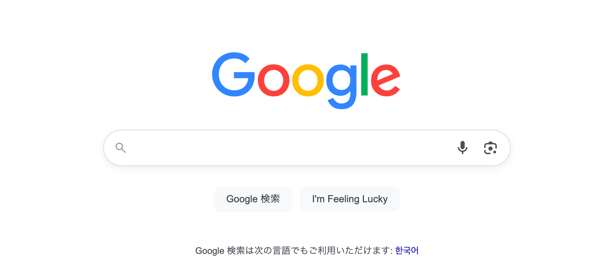
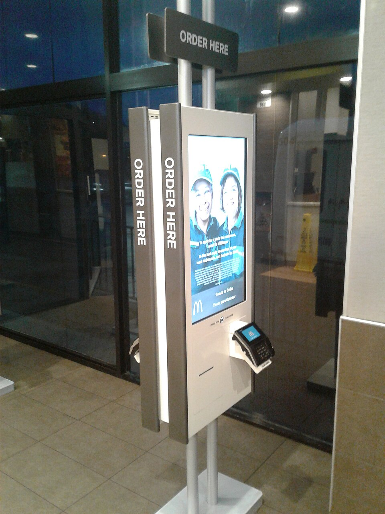
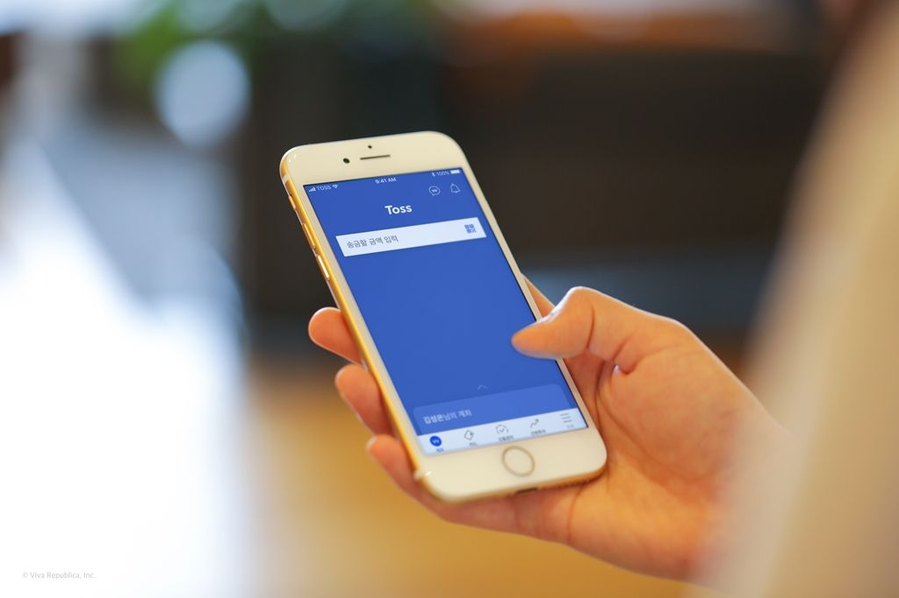
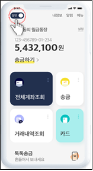
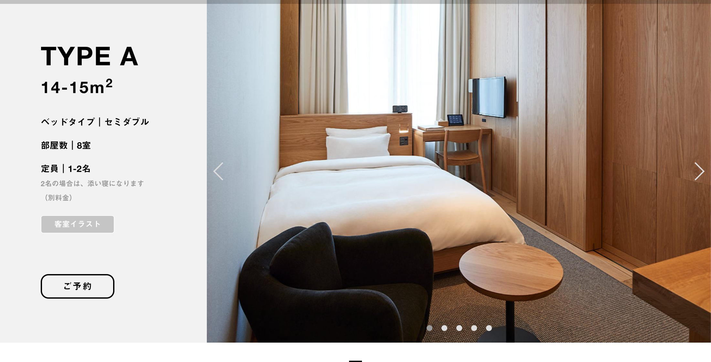
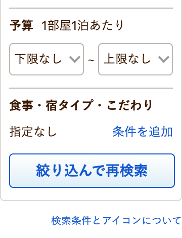
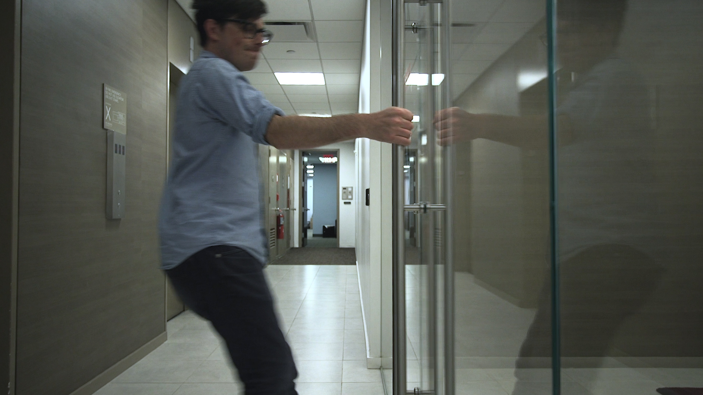
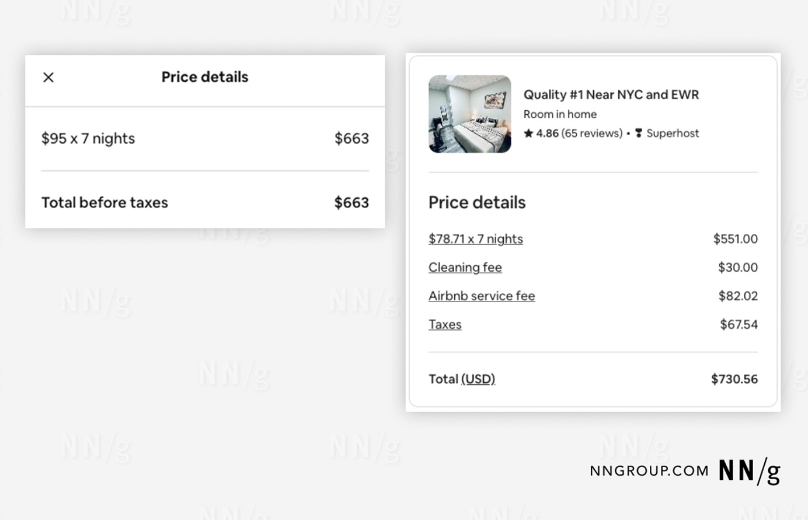

すぐ使える画面・迷う画面




何が分かりやすく、どこで迷う？
観光サービスのUI/UX
信頼して使えるサービスづくり
担当 崔ナリ




何が分かりやすく、どこで迷う？
今日はPrototype 1を診断・修正して、Prototype 2へ。
旅行中は、初めての画面・言語・地域の仕組みに出会う。
最初にすることは
「検索」
大きさ・位置・余白で
主な行動を示す
Visual Hierarchy
Cognitive Load / Whitespace

写真・文字の調子
揃った余白と配置
設備・人数・
追加条件の表示
何が「使いやすそう」「信頼できそう」と感じさせる？
修正：サービスを説明する文と、主な操作一つの優先順位を調整。
思い描く流れ
実際には、選択が続くことも
Cognitive Load：操作中に考え、処理することの多さ。

予算・食事・宿の種類など、
必要な条件から探す。
飲食店の説明例：87件 → 4件
現在地から10分以内
一人で食事可・日本語メニューあり
交通・道案内
飲食店・カフェ
観光・体験・買い物
病院・両替・天気
情報を、理解しやすい単位に分ける。
修正：選択肢を絞る・意味でまとめる・段階を分ける。

取っ手を見ると、
どんな動作を予想する？
見た目の手がかりと
実際の操作は合う？
Mental Model
Affordance / Signifier
他のサービスで覚えた使い方を、ここでも予想する。
修正：ボタン・文言・行動の手がかり・操作の順序を改善。
検索中・保存完了・予約確定など、状態を知らせる。
保存ボタンは説明用デモ。実際の予約や保存は行いません。
修正：短い状態表示・完了通知・修正できるエラー案内を追加。
言語・年齢・経験
アイコンや略語への慣れ
移動中・日光・片手操作
遅い通信・時間の制約
同じ画面でも、利用者と状況によって使いやすさは変わる。

最初に見た金額と、
最後に払う金額。
追加費用や条件を、
いつ確認できる？
2024年掲載の記録画像。
現在の表示を示しません。
過去の宿泊予約サイトの調査・改善：英国CMA（2017–2019）↗ ／ Airbnb公式の料金表示案内（2025）↗
修正：短いラベル・読みやすい文字・必要な信頼情報を整える。
目的を達成したとき
体験の中で心が動いたとき
写真・記念品・自分だけの結果
感謝の言葉・次の体験への案内
自分たちのサービスで、「できた」「よかった」と感じるのはいつ？
「もっときれいに」から、問題・根拠・修正内容へ。
今日の診断から、影響の大きい問題を選ぶ。
UXの根拠を示し、AI・MCPで実際のPrototypeを修正。
各問題：現在の状態・関連する理論・修正方法を記録。
修正前後の画面と、変えた理由を並べて確認。
自分たちは直したつもり。
利用者も同じように感じる？
ユーザビリティテストと相互フィードバックで確かめる。